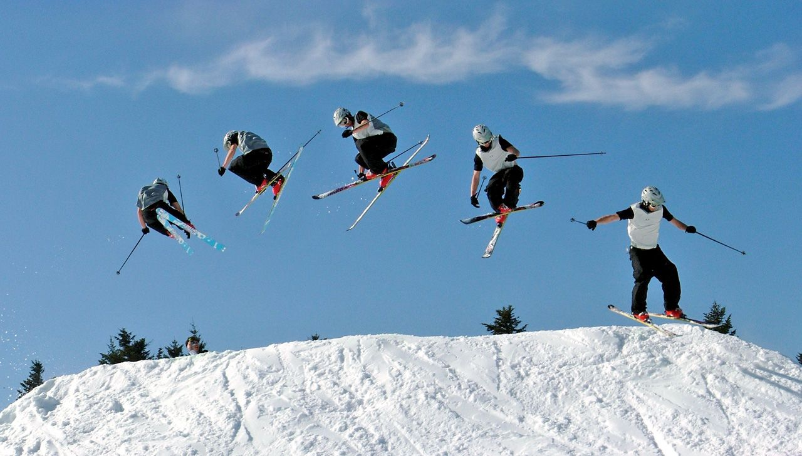

La vitesse ne change pas
Les écarts sont tous égaux.
Graphique distance-temps : une droite.
🚗 Comme une voiture sur l'autoroute avec le régulateur de vitesse.
Physique-Chimie 3e · Uniforme, accéléré ou ralenti ?
Une chronophotographie, c'est une photo où l'on voit l'objet à intervalles de temps égaux (par exemple toutes les secondes).

👉 On regarde l'écart entre deux points : il indique la distance parcourue pendant le même temps.
Les écarts sont tous égaux.
Graphique distance-temps : une droite.
🚗 Comme une voiture sur l'autoroute avec le régulateur de vitesse.
Les écarts sont de plus en plus grands.
Graphique : une courbe qui monte de plus en plus vite.
🚲 Comme un vélo qui descend une pente.
Les écarts sont de plus en plus petits.
Graphique : une courbe qui s'aplatit.
🚜 Comme un tracteur qui freine avant le portail.
Choisis un mouvement, règle-le, puis clique sur Lancer. Un point est photographié toutes les secondes.
| Temps (s) | Distance (m) | Écart avec la seconde d'avant (m) |
|---|
🔵 Uniforme : écarts identiques → graphique en droite.
🟢 Accéléré : écarts qui augmentent → courbe qui se redresse.
🟠 Ralenti : écarts qui diminuent → courbe qui s'aplatit. Si l'écart vaut 0, l'objet est arrêté : la courbe devient horizontale.
Question 1 / 10 · Score : 0
0 / 10